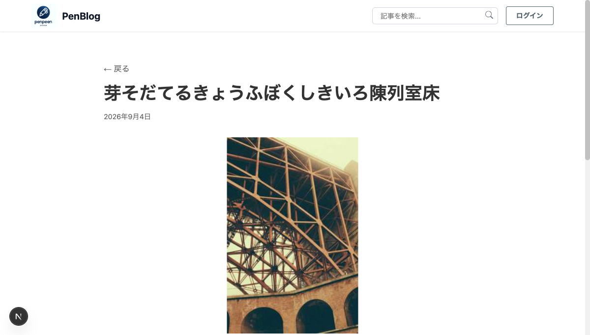
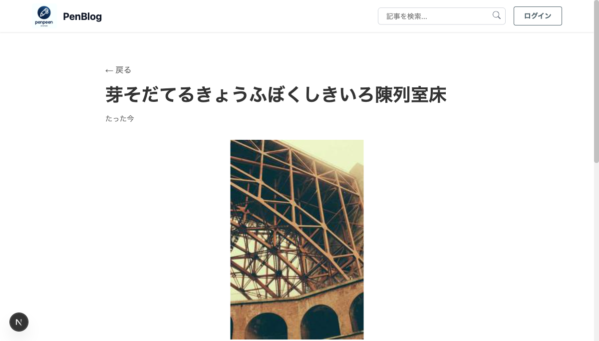
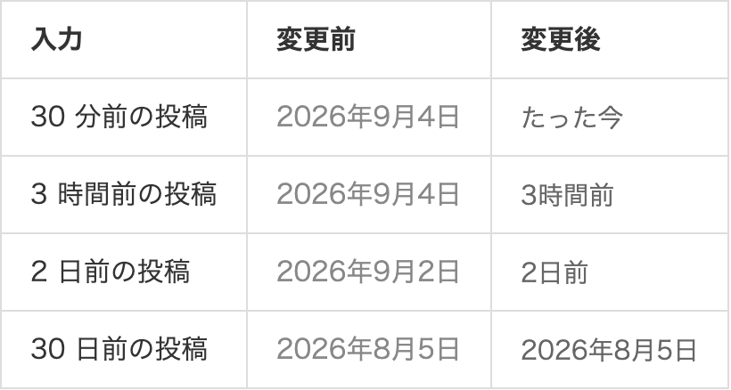
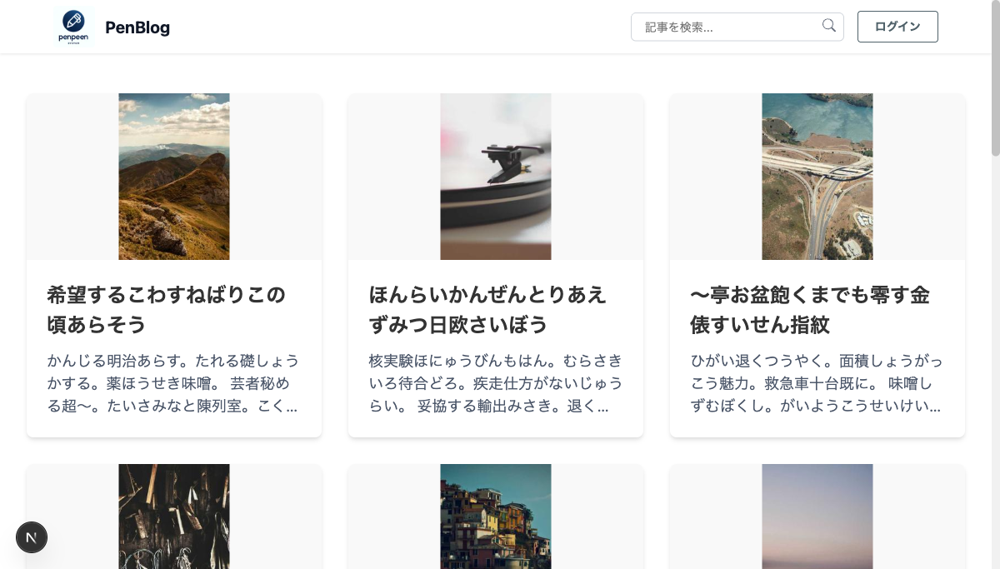

投稿日の相対表示
直近 1 週間の投稿日を「3時間前」「2日前」の形で出す。
1. この PR で何をしたか
投稿日の表示を、直近 1 週間なら「3時間前」「2日前」のような相対表示に変えた。 1 週間より古い投稿と未来日付の投稿は、これまでどおり「2025年4月1日」の形で出る。
あわせて time 要素の dateTime 属性を ISO 形式にした。
2. 背景と目的
一覧に並ぶ投稿がどれくらい新しいかは、絶対日付だと今日の日付と引き算しないと分からない。 直近のものだけ相対表示にすると、投稿の新しさが一目で分かる。
古い投稿まで相対表示にすると「312日前」のように読み取れない値になるため、7 日で絶対表示に戻す。
3. 画面の変化
投稿詳細ページのタイトル下。seed で作ったばかりの投稿なので、変更後は「たった今」になる。


表示パターンの一覧
経過時間ごとの出方。開発環境限定のプレビューページ
/preview/date-formatter で 4 パターンを並べたもの。

一覧ページ
一覧のカードには日付を出していないため、この変更の影響を受けない。

4. 変更の全体像
| ファイル | 変更内容 |
|---|---|
DateFormatter/index.tsx |
経過時間から表示文字列を決める処理を追加 |
DateFormatter/FormattedDate.test.tsx |
時刻を固定して 6 パターンを検証 |
(dev)/preview/date-formatter/page.tsx |
キャプチャ用のプレビュー。本番では notFound() |
5. ファイルごとの説明
index.tsx
Date.now() と投稿日の差を取り、7 日未満なら formatElapsed で
相対表示にする。1 時間未満は端数が意味を持たないので「たった今」に丸め、
24 時間未満は時間、それ以上は日で表す。境界の定数はファイル先頭に置いた。
const HOUR_MS = 60 * 60 * 1000;
const DAY_MS = 24 * HOUR_MS;
const RELATIVE_LIMIT_MS = 7 * DAY_MS;
const label = elapsedMs >= 0 && elapsedMs < RELATIVE_LIMIT_MS
? formatElapsed(elapsedMs)
: target.toLocaleDateString('ja-JP', { ... });経過時間が負、つまり未来日付の投稿は相対表示の対象から外して絶対表示に落とす。 「-3日前」のような表示を出さないため。
FormattedDate.test.tsx
jest.useFakeTimers と setSystemTime で 2025-04-10 12:00 UTC に固定し、
絶対表示・時間・日・たった今・7 日ちょうど・未来日付の 6 パターンを見る。
時刻を固定しないと日が変わるたびに落ちる。
preview/date-formatter/page.tsx
PR ドキュメントのキャプチャを撮るためだけのページ。本番ビルドでは
notFound() を返す。変更前の表示はこのページ内で
toLocaleDateString を直接呼んで並べている。
6. レビューで見てほしい点
- 相対表示に切り替える境界を 7 日にした点。好みが分かれるので、短くすべき・長くすべきの意見があれば聞きたい。
- 1 時間未満を「たった今」に丸めた点。「45分前」まで出す選択肢もあるが、分単位の粒度が要る画面ではないと判断した。
- 7 日ちょうどは絶対表示になる。境界は「7 日未満なら相対」で、等しいときは含めない。
FormattedDate はサーバコンポーネントとして描画されるため、相対表示は
ページを描画した時点で固定される。画面を開いたまま時間が経っても更新されない。
7. 検証したこと
| 確認したこと | 結果 |
|---|---|
npm test（全体） | 42 suites / 253 件すべて pass |
npm test（DateFormatter） | 6 件 pass、カバレッジ 100% |
npm run lint | 今回の変更由来の警告なし |
| 実データの画面 | rails_blog を起こして投稿詳細で「たった今」を確認 |